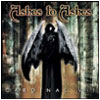

| Artist: | Ashes To Ashes |
| Title: | Cardinal VII |
| Label: | DVS Records DVS006 |
| Length(s): | 59 minutes |
| Year(s) of release: | 2002 |
| Month of review: | [08/2002] |
| 1) | New World Obscure | 3.54 |
| 2) | Embraced In Black | 5.38 |
| 3) | Among Mortals | 3.48 |
| 4) | Truth On Scaffold | 6.56 |
| 5) | Iben | 1.00 |
| 6) | Dualism | 6.16 |
| 7) | Sic Transit Gloria Mundi | 13.32 |
| 8) | Ravenous Unleashed | 2.20 |
| 9) | Behind Closed Eyes | 4.52 |
| 10) | Cardinal VII | 8.27 |
| 11) | Iben Part 2 | 1.58 |
Embraced In Black continues the Gregorian feel of the previous track in its opening sequence. Then the music takes on a rather friendly feel, certainly compared to the previous track. Is Gregorian progmetal already a patented subgenre? Maybe this is the time to patent it then, because notwithstanding the more typical, yet on this track more melodic, lead vocals, the choirs have a certain "church" feel. (Damn, I saw later browsing through the bio that the band calls their music Gregorian Metal).
Among Mortals opens soothingly, forlornly with piano and synth strings. Like Apocalyptica, the band incorporates cello and the like in their music here, making for a brooding atmosphere, akin to the best in film music. Very, very good.
Truth On Scaffold is dark, slow plodding metal track. The vocal melodies are also the less melodic for it. Metallica is getting too close here. I certainly like the band quite a bit less this way. Then we get a break into something with soothing sensuous vocals, the Gregorian aspect is back. You might be thinking of Janus here, even. Very melodic, and tender even. The metal vocals return, accompanied by a somewhat Arabic sounding melody and a wall of rhythm guitar.
Iben is a piano interlude, quite serene. Of course, Dualism rocks away again supported by ahhhh-keyboards. Then the band becomes positively frantic, in a very good way, building up the tension. In this way the music is very varied here. A very powerful instrumental with various tempo changes, going from plodding slow to extremely fast.
Sic Transit Gloria Mundi is by far the longest track on the album. The opening is slow and dreary, with the vocalist devoid of any interest in living. In the back, the guitar shower us with slow lines of distortion, while the vocalist takes a turn, now singing without the metal in his voice. In fact the slow moving part in which you hear the title, the music is supreme, majestic and moving. The following interlude is classical in approach, after which the piano takes over leading us into an aggressive part where the guitars go full throttle. A small progmetal epic, very much in their own style. Excellent.
Ravenous Unleashed means its time for some speedy stuff. It is only a short track, but takes us thoroughly out of the religious feel of the previous track. Plenty of variation in this track and towards the end even some melody creeping in, with nice keyboard runs and percolating piano. Music that prods to activity.
Behind Closed Eyes opens in a somewhat gothic style, with raging guitars and rather peaceful piano. Then the music falls away for the most part, leaving us a with urgent percussion and low vocals. The drive is again strongly present, with the chrous being extremely catchy (think Royal Hunt here). We move right into the open sounding title track. The rhythm section is doing good work here, very tight. Again, the vocal parts are quite catchy, the melodic additions are often have a religious (Enigma) or classical feel. Through it all the rhythm guitars and double bass is raging. In the middle we get a introspective interlude with some interesting sounds after which the music rages bombastically again.
Iben part 2 closes down the album in a soothing way, with a string orchestra and piano.